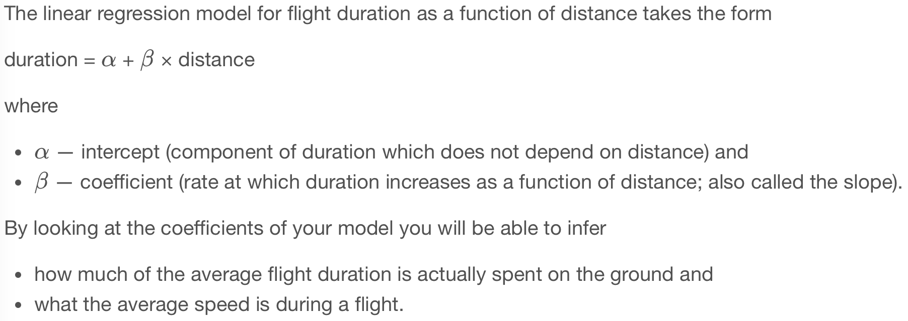
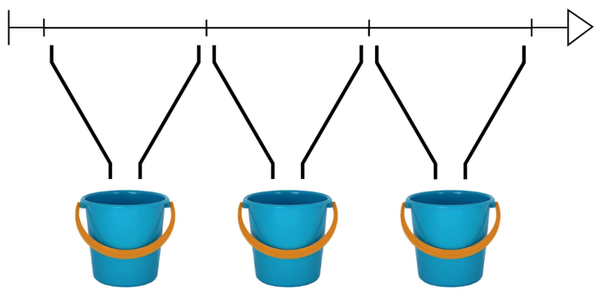
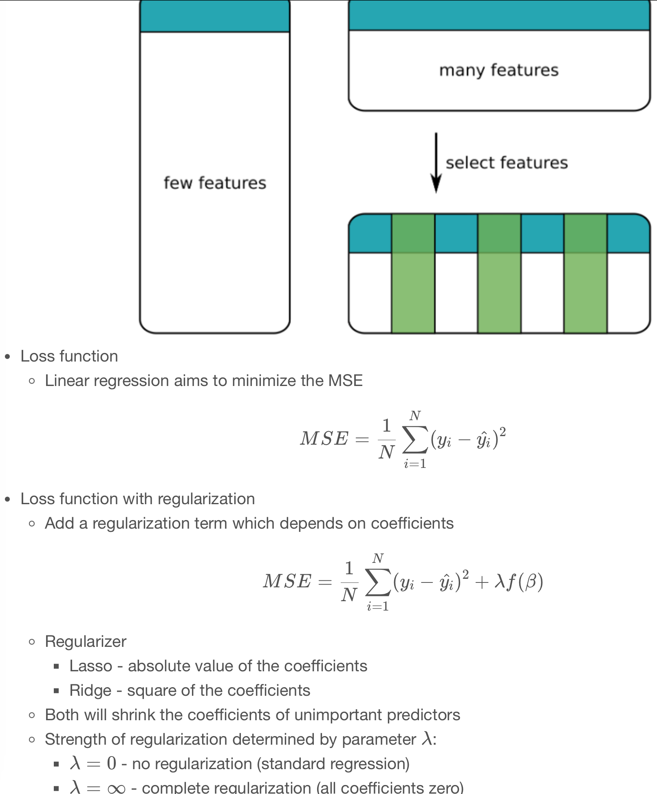

Code
import pyspark
from pyspark.sql import SparkSession
import numpy as np
import pandas as pdkakamana
April 10, 2023
Next, you will learn how to create linear regression models. In addition, you will learn how to augment your data with new predictors as well as how to select only the most relevant predictors.
This Regression is part of Datacamp course: Machine Learning with PySpark Spark is a powerful, general-purpose tool for working with large data sets. Spark transparently distributes compute tasks across a cluster. By doing this, operations are fast, but you can also focus on the analysis rather than worry about technical details. This course will teach you how to get data into Spark, and then dive into three fundamental Spark Machine Learning algorithms: Linear Regression, Logistic Regression/Classifiers, and creating pipelines. You will analyze a large dataset of flight delays and spam text messages along the way. With this background, you will be able to harness the power of Spark and apply it to your own Machine Learning projects.
This is my learning experience of data science through DataCamp. These repository contributions are part of my learning journey through my graduate program masters of applied data sciences (MADS) at University Of Michigan, DeepLearning.AI, Coursera & DataCamp. You can find my similar articles & more stories at my medium & LinkedIn profile. I am available at kaggle & github blogs & github repos. Thank you for your motivation, support & valuable feedback.
These include projects, coursework & notebook which I learned through my data science journey. They are created for reproducible & future reference purpose only. All source code, slides or screenshot are intellactual property of respective content authors. If you find these contents beneficial, kindly consider learning subscription from DeepLearning.AI Subscription, Coursera, DataCamp
The org column in the flights data is a categorical variable giving the airport from which a flight departs.
spark = SparkSession.builder.master('local[*]').appName('flights').getOrCreate()
# Read data from CSV file
flights = spark.read.csv('dataset/flights-larger.csv', sep=',', header=True, inferSchema=True,
nullValue='NA')
# Get number of records
print("The data contain %d records." % flights.count())
# View the first five records
flights.show(5)
# Check column data types
print(flights.printSchema())
print(flights.dtypes)The data contain 275000 records.
+---+---+---+-------+------+---+----+------+--------+-----+
|mon|dom|dow|carrier|flight|org|mile|depart|duration|delay|
+---+---+---+-------+------+---+----+------+--------+-----+
| 10| 10| 1| OO| 5836|ORD| 157| 8.18| 51| 27|
| 1| 4| 1| OO| 5866|ORD| 466| 15.5| 102| null|
| 11| 22| 1| OO| 6016|ORD| 738| 7.17| 127| -19|
| 2| 14| 5| B6| 199|JFK|2248| 21.17| 365| 60|
| 5| 25| 3| WN| 1675|SJC| 386| 12.92| 85| 22|
+---+---+---+-------+------+---+----+------+--------+-----+
only showing top 5 rows
root
|-- mon: integer (nullable = true)
|-- dom: integer (nullable = true)
|-- dow: integer (nullable = true)
|-- carrier: string (nullable = true)
|-- flight: integer (nullable = true)
|-- org: string (nullable = true)
|-- mile: integer (nullable = true)
|-- depart: double (nullable = true)
|-- duration: integer (nullable = true)
|-- delay: integer (nullable = true)
None
[('mon', 'int'), ('dom', 'int'), ('dow', 'int'), ('carrier', 'string'), ('flight', 'int'), ('org', 'string'), ('mile', 'int'), ('depart', 'double'), ('duration', 'int'), ('delay', 'int')]+---+---+---+-------+------+---+----+------+--------+-----+-------+
|mon|dom|dow|carrier|flight|org|mile|depart|duration|delay|org_idx|
+---+---+---+-------+------+---+----+------+--------+-----+-------+
| 10| 10| 1| OO| 5836|ORD| 157| 8.18| 51| 27| 0.0|
| 1| 4| 1| OO| 5866|ORD| 466| 15.5| 102| null| 0.0|
| 11| 22| 1| OO| 6016|ORD| 738| 7.17| 127| -19| 0.0|
| 2| 14| 5| B6| 199|JFK|2248| 21.17| 365| 60| 2.0|
| 5| 25| 3| WN| 1675|SJC| 386| 12.92| 85| 22| 5.0|
| 3| 28| 1| B6| 377|LGA|1076| 13.33| 182| 70| 3.0|
| 5| 28| 6| B6| 904|ORD| 740| 9.58| 130| 47| 0.0|
| 1| 19| 2| UA| 820|SFO| 679| 12.75| 123| 135| 1.0|
| 8| 5| 5| US| 2175|LGA| 214| 13.0| 71| -10| 3.0|
| 5| 27| 5| AA| 1240|ORD|1197| 14.42| 195| -11| 0.0|
| 8| 20| 6| B6| 119|JFK|1182| 14.67| 198| 20| 2.0|
| 2| 3| 1| AA| 1881|JFK|1090| 15.92| 200| -9| 2.0|
| 8| 26| 5| B6| 35|JFK|1028| 20.58| 193| 102| 2.0|
| 4| 9| 5| AA| 336|ORD| 733| 20.5| 125| 32| 0.0|
| 3| 8| 2| UA| 678|ORD| 733| 10.95| 129| 55| 0.0|
| 8| 10| 3| OH| 6347|LGA| 292| 11.75| 102| 8| 3.0|
| 8| 14| 0| UA| 624|ORD| 612| 17.92| 109| 57| 0.0|
| 4| 8| 4| OH| 5585|JFK| 301| 13.25| 88| 23| 2.0|
| 1| 14| 4| UA| 1524|SFO| 414| 14.87| 91| 27| 1.0|
| 1| 2| 6| AA| 1341|ORD|1846| 7.5| 275| 26| 0.0|
+---+---+---+-------+------+---+----+------+--------+-----+-------+
only showing top 20 rows
# Import the one hot encoder class
from pyspark.ml.feature import OneHotEncoder
# Create an instance of the one hot encoder
onehot = OneHotEncoder(inputCols=['org_idx'], outputCols=['org_dummy'])
# Apply the one hot encoder to the flights data
onehot = onehot.fit(flights)
flights_onehot = onehot.transform(flights)
# Check the results
flights_onehot.select('org', 'org_idx', 'org_dummy').distinct().sort('org_idx').show()+---+-------+-------------+
|org|org_idx| org_dummy|
+---+-------+-------------+
|ORD| 0.0|(7,[0],[1.0])|
|SFO| 1.0|(7,[1],[1.0])|
|JFK| 2.0|(7,[2],[1.0])|
|LGA| 3.0|(7,[3],[1.0])|
|SMF| 4.0|(7,[4],[1.0])|
|SJC| 5.0|(7,[5],[1.0])|
|TUS| 6.0|(7,[6],[1.0])|
|OGG| 7.0| (7,[],[])|
+---+-------+-------------+
In this exercise you’ll build a regression model to predict flight duration (the duration column).
For the moment you’ll keep the model simple, including only the distance of the flight (the km column) as a predictor.
+---+---+---+-------+------+---+----+------+--------+-----+-------+-------------+
|mon|dom|dow|carrier|flight|org|mile|depart|duration|delay|org_idx| org_dummy|
+---+---+---+-------+------+---+----+------+--------+-----+-------+-------------+
| 10| 10| 1| OO| 5836|ORD| 157| 8.18| 51| 27| 0.0|(7,[0],[1.0])|
| 1| 4| 1| OO| 5866|ORD| 466| 15.5| 102| null| 0.0|(7,[0],[1.0])|
| 11| 22| 1| OO| 6016|ORD| 738| 7.17| 127| -19| 0.0|(7,[0],[1.0])|
| 2| 14| 5| B6| 199|JFK|2248| 21.17| 365| 60| 2.0|(7,[2],[1.0])|
| 5| 25| 3| WN| 1675|SJC| 386| 12.92| 85| 22| 5.0|(7,[5],[1.0])|
+---+---+---+-------+------+---+----+------+--------+-----+-------+-------------+
only showing top 5 rows
+---+---+---+-------+------+---+------+--------+-----+-------+-------------+------+
|mon|dom|dow|carrier|flight|org|depart|duration|delay|org_idx| org_dummy| km|
+---+---+---+-------+------+---+------+--------+-----+-------+-------------+------+
| 10| 10| 1| OO| 5836|ORD| 8.18| 51| 27| 0.0|(7,[0],[1.0])| 253.0|
| 1| 4| 1| OO| 5866|ORD| 15.5| 102| null| 0.0|(7,[0],[1.0])| 750.0|
| 11| 22| 1| OO| 6016|ORD| 7.17| 127| -19| 0.0|(7,[0],[1.0])|1188.0|
| 2| 14| 5| B6| 199|JFK| 21.17| 365| 60| 2.0|(7,[2],[1.0])|3618.0|
| 5| 25| 3| WN| 1675|SJC| 12.92| 85| 22| 5.0|(7,[5],[1.0])| 621.0|
+---+---+---+-------+------+---+------+--------+-----+-------+-------------+------+
only showing top 5 rows
+---+---+---+-------+------+---+------+--------+-----+-------+-------------+------+--------+
|mon|dom|dow|carrier|flight|org|depart|duration|delay|org_idx| org_dummy| km|features|
+---+---+---+-------+------+---+------+--------+-----+-------+-------------+------+--------+
| 10| 10| 1| OO| 5836|ORD| 8.18| 51| 27| 0.0|(7,[0],[1.0])| 253.0| [253.0]|
| 1| 4| 1| OO| 5866|ORD| 15.5| 102| null| 0.0|(7,[0],[1.0])| 750.0| [750.0]|
| 11| 22| 1| OO| 6016|ORD| 7.17| 127| -19| 0.0|(7,[0],[1.0])|1188.0|[1188.0]|
| 2| 14| 5| B6| 199|JFK| 21.17| 365| 60| 2.0|(7,[2],[1.0])|3618.0|[3618.0]|
| 5| 25| 3| WN| 1675|SJC| 12.92| 85| 22| 5.0|(7,[5],[1.0])| 621.0| [621.0]|
+---+---+---+-------+------+---+------+--------+-----+-------+-------------+------+--------+
only showing top 5 rows
from pyspark.ml.regression import LinearRegression
from pyspark.ml.evaluation import RegressionEvaluator
# Create a regression object and train on training data
regression = LinearRegression(featuresCol='features', labelCol='duration').fit(flights_train)
# Create predictions for the test data and take a look at the predictions
predictions = regression.transform(flights_test)
predictions.select('duration', 'prediction').show(5, False)
# Calculate the RMSE
RegressionEvaluator(labelCol='duration', metricName='rmse').evaluate(predictions)23/04/11 00:21:01 WARN Instrumentation: [30b8ecc7] regParam is zero, which might cause numerical instability and overfitting.
23/04/11 00:21:01 WARN InstanceBuilder$JavaBLAS: Failed to load implementation from:dev.ludovic.netlib.blas.VectorBLAS
23/04/11 00:21:01 WARN InstanceBuilder$NativeBLAS: Failed to load implementation from:dev.ludovic.netlib.blas.JNIBLAS
23/04/11 00:21:01 WARN InstanceBuilder$NativeBLAS: Failed to load implementation from:dev.ludovic.netlib.blas.ForeignLinkerBLAS
23/04/11 00:21:01 WARN InstanceBuilder$NativeLAPACK: Failed to load implementation from:dev.ludovic.netlib.lapack.JNILAPACK
+--------+-----------------+
|duration|prediction |
+--------+-----------------+
|210 |222.625095554037 |
|150 |133.6118925209612|
|125 |133.6118925209612|
|120 |133.6118925209612|
|215 |188.4125379256779|
+--------+-----------------+
only showing top 5 rows
17.162736947467877
44.295923491174236
[0.07569149917778555]
0.07569149917778555
792.6913940371419Some airports are busier than others. Some airports are bigger than others too. Flights departing from large or busy airports are likely to spend more time taxiing or waiting for their takeoff slot. So it stands to reason that the duration of a flight might depend not only on the distance being covered but also the airport from which the flight departs.
You are going to make the regression model a little more sophisticated by including the departure airport as a predictor.
+---+---+---+-------+------+---+------+--------+-----+-------+-------------+------+--------------------+
|mon|dom|dow|carrier|flight|org|depart|duration|delay|org_idx| org_dummy| km| features|
+---+---+---+-------+------+---+------+--------+-----+-------+-------------+------+--------------------+
| 10| 10| 1| OO| 5836|ORD| 8.18| 51| 27| 0.0|(7,[0],[1.0])| 253.0|(8,[0,1],[253.0,1...|
| 1| 4| 1| OO| 5866|ORD| 15.5| 102| null| 0.0|(7,[0],[1.0])| 750.0|(8,[0,1],[750.0,1...|
| 11| 22| 1| OO| 6016|ORD| 7.17| 127| -19| 0.0|(7,[0],[1.0])|1188.0|(8,[0,1],[1188.0,...|
| 2| 14| 5| B6| 199|JFK| 21.17| 365| 60| 2.0|(7,[2],[1.0])|3618.0|(8,[0,3],[3618.0,...|
| 5| 25| 3| WN| 1675|SJC| 12.92| 85| 22| 5.0|(7,[5],[1.0])| 621.0|(8,[0,6],[621.0,1...|
+---+---+---+-------+------+---+------+--------+-----+-------+-------------+------+--------------------+
only showing top 5 rows
flights_train, flights_test = flights.randomSplit([0.8, 0.2])
# Create a regression object and train on training data
regression = LinearRegression(featuresCol='features', labelCol='duration').fit(flights_train)
# Create predictions for the test data
predictions = regression.transform(flights_test)
# Calculate the RMSE on test data
RegressionEvaluator(labelCol='duration', metricName='rmse').evaluate(predictions)23/04/11 00:30:13 WARN Instrumentation: [77102ecd] regParam is zero, which might cause numerical instability and overfitting. 11.173083151870756Remember that origin airport, org, has eight possible values (ORD, SFO, JFK, LGA, SMF, SJC, TUS and OGG) which have been one-hot encoded to seven dummy variables in org_dummy.
The values for km and org_dummy have been assembled into features, which has eight columns with sparse representation. Column indices in features are as follows:
In this exercise you’ll be using the intercept and coefficients attributes to interpret the model.
The coefficients attribute is a list, where the first element indicates how flight duration changes with flight distance.
avg_speed_hour = 60 / regression.coefficients[0]
print(avg_speed_hour)
# Averate minutes on ground at OGG
inter = regression.intercept
print(inter)
# Average minutes on ground at JFK
avg_ground_jfk= inter + regression.coefficients[3]
print(avg_ground_jfk)
# Average minutes on ground at LGA
avg_ground_lga = inter + regression.coefficients[4]
print(avg_ground_lga)807.5223057447772
16.204312999214938
68.69309629682724
62.82878681140498
Time of day data are a challenge with regression models. They are also a great candidate for bucketing.
In this lesson you will convert the flight departure times from numeric values between 0 (corresponding to “00:00”) and 24 (corresponding to “24:00”) to binned values. You’ll then take those binned values and one-hot encode them.
from pyspark.ml.feature import Bucketizer
# Create buckets at 3 hour intervals through the day
buckets = Bucketizer(splits=[
3 * x for x in range(9)
], inputCol='depart', outputCol='depart_bucket')
# Bucket the departure times
bucketed = buckets.transform(flights)
bucketed.select('depart', 'depart_bucket').show(5)
# Create a one-hot encoder
onehot = OneHotEncoder(inputCols=['depart_bucket'], outputCols=['depart_dummy'])
# One-hot encode the bucketed departure times
flights_onehot = onehot.fit(bucketed).transform(bucketed)
flights_onehot.select('depart', 'depart_bucket', 'depart_dummy').show(5)+------+-------------+
|depart|depart_bucket|
+------+-------------+
| 8.18| 2.0|
| 15.5| 5.0|
| 7.17| 2.0|
| 21.17| 7.0|
| 12.92| 4.0|
+------+-------------+
only showing top 5 rows
+------+-------------+-------------+
|depart|depart_bucket| depart_dummy|
+------+-------------+-------------+
| 8.18| 2.0|(7,[2],[1.0])|
| 15.5| 5.0|(7,[5],[1.0])|
| 7.17| 2.0|(7,[2],[1.0])|
| 21.17| 7.0| (7,[],[])|
| 12.92| 4.0|(7,[4],[1.0])|
+------+-------------+-------------+
only showing top 5 rows
In the previous exercise the departure time was bucketed and converted to dummy variables. Now you’re going to include those dummy variables in a regression model for flight duration.
The data are in flights. The km, org_dummy and depart_dummy columns have been assembled into features, where km is index 0, org_dummy runs from index 1 to 7 and depart_dummy from index 8 to 14.
+---+---+---+-------+------+---+------+--------+-----+-------+-------------+------+-------------+-------------+--------------------+
|mon|dom|dow|carrier|flight|org|depart|duration|delay|org_idx| org_dummy| km|depart_bucket| depart_dummy| features|
+---+---+---+-------+------+---+------+--------+-----+-------+-------------+------+-------------+-------------+--------------------+
| 10| 10| 1| OO| 5836|ORD| 8.18| 51| 27| 0.0|(7,[0],[1.0])| 253.0| 2.0|(7,[2],[1.0])|(15,[0,1,10],[253...|
| 1| 4| 1| OO| 5866|ORD| 15.5| 102| null| 0.0|(7,[0],[1.0])| 750.0| 5.0|(7,[5],[1.0])|(15,[0,1,13],[750...|
| 11| 22| 1| OO| 6016|ORD| 7.17| 127| -19| 0.0|(7,[0],[1.0])|1188.0| 2.0|(7,[2],[1.0])|(15,[0,1,10],[118...|
| 2| 14| 5| B6| 199|JFK| 21.17| 365| 60| 2.0|(7,[2],[1.0])|3618.0| 7.0| (7,[],[])|(15,[0,3],[3618.0...|
| 5| 25| 3| WN| 1675|SJC| 12.92| 85| 22| 5.0|(7,[5],[1.0])| 621.0| 4.0|(7,[4],[1.0])|(15,[0,6,12],[621...|
+---+---+---+-------+------+---+------+--------+-----+-------+-------------+------+-------------+-------------+--------------------+
only showing top 5 rows
flights_train, flights_test = flights.randomSplit([0.8, 0.2])
# Train with training data
regression = LinearRegression(labelCol='duration').fit(flights_train)
predictions = regression.transform(flights_test)
RegressionEvaluator(labelCol='duration', metricName='rmse').evaluate(predictions)
# Average minutes on ground at OGG for flights departing between 21:00 and 24:00
avg_eve_ogg = regression.intercept
print(avg_eve_ogg)
# Average minutes on ground at OGG for flights departing between 00:00 and 03:00
avg_night_ogg = regression.intercept + regression.coefficients[8]
print(avg_night_ogg)
# Average minutes on ground at JFK for flights departing between 00:00 and 03:00
avg_night_jfk = regression.intercept + regression.coefficients[3] + regression.coefficients[8]
print(avg_night_jfk)23/04/11 00:40:59 WARN Instrumentation: [1af1202e] regParam is zero, which might cause numerical instability and overfitting.
10.39466681440241
-3.7075609618922467
48.22234281706298 
Let’s add more features to our model. This will not necessarily result in a better model. Adding some features might improve the model. Adding other features might make it worse.
More features will always make the model more complicated and difficult to interpret.
These are the features you’ll include in the next model:
These have been assembled into the features column, which is a sparse representation of 32 columns (remember one-hot encoding produces a number of columns which is one fewer than the number of levels).
+---+---+---+-------+------+---+------+--------+-----+-------+-------------+------+-------------+-------------+--------------------+-------------+---------------+
|mon|dom|dow|carrier|flight|org|depart|duration|delay|org_idx| org_dummy| km|depart_bucket| depart_dummy| features| dow_dummy| mon_dummy|
+---+---+---+-------+------+---+------+--------+-----+-------+-------------+------+-------------+-------------+--------------------+-------------+---------------+
| 10| 10| 1| OO| 5836|ORD| 8.18| 51| 27| 0.0|(7,[0],[1.0])| 253.0| 2.0|(7,[2],[1.0])|(15,[0,1,10],[253...|(6,[1],[1.0])|(11,[10],[1.0])|
| 1| 4| 1| OO| 5866|ORD| 15.5| 102| null| 0.0|(7,[0],[1.0])| 750.0| 5.0|(7,[5],[1.0])|(15,[0,1,13],[750...|(6,[1],[1.0])| (11,[1],[1.0])|
| 11| 22| 1| OO| 6016|ORD| 7.17| 127| -19| 0.0|(7,[0],[1.0])|1188.0| 2.0|(7,[2],[1.0])|(15,[0,1,10],[118...|(6,[1],[1.0])| (11,[],[])|
| 2| 14| 5| B6| 199|JFK| 21.17| 365| 60| 2.0|(7,[2],[1.0])|3618.0| 7.0| (7,[],[])|(15,[0,3],[3618.0...|(6,[5],[1.0])| (11,[2],[1.0])|
| 5| 25| 3| WN| 1675|SJC| 12.92| 85| 22| 5.0|(7,[5],[1.0])| 621.0| 4.0|(7,[4],[1.0])|(15,[0,6,12],[621...|(6,[3],[1.0])| (11,[5],[1.0])|
+---+---+---+-------+------+---+------+--------+-----+-------+-------------+------+-------------+-------------+--------------------+-------------+---------------+
only showing top 5 rows
+---+---+---+-------+------+---+------+--------+-----+-------+-------------+------+-------------+-------------+-------------+---------------+--------------------+
|mon|dom|dow|carrier|flight|org|depart|duration|delay|org_idx| org_dummy| km|depart_bucket| depart_dummy| dow_dummy| mon_dummy| features|
+---+---+---+-------+------+---+------+--------+-----+-------+-------------+------+-------------+-------------+-------------+---------------+--------------------+
| 10| 10| 1| OO| 5836|ORD| 8.18| 51| 27| 0.0|(7,[0],[1.0])| 253.0| 2.0|(7,[2],[1.0])|(6,[1],[1.0])|(11,[10],[1.0])|(32,[0,1,10,16,31...|
| 1| 4| 1| OO| 5866|ORD| 15.5| 102| null| 0.0|(7,[0],[1.0])| 750.0| 5.0|(7,[5],[1.0])|(6,[1],[1.0])| (11,[1],[1.0])|(32,[0,1,13,16,22...|
| 11| 22| 1| OO| 6016|ORD| 7.17| 127| -19| 0.0|(7,[0],[1.0])|1188.0| 2.0|(7,[2],[1.0])|(6,[1],[1.0])| (11,[],[])|(32,[0,1,10,16],[...|
| 2| 14| 5| B6| 199|JFK| 21.17| 365| 60| 2.0|(7,[2],[1.0])|3618.0| 7.0| (7,[],[])|(6,[5],[1.0])| (11,[2],[1.0])|(32,[0,3,20,23],[...|
| 5| 25| 3| WN| 1675|SJC| 12.92| 85| 22| 5.0|(7,[5],[1.0])| 621.0| 4.0|(7,[4],[1.0])|(6,[3],[1.0])| (11,[5],[1.0])|(32,[0,6,12,18,26...|
+---+---+---+-------+------+---+------+--------+-----+-------+-------------+------+-------------+-------------+-------------+---------------+--------------------+
only showing top 5 rows
flights_train, flights_test = flights.randomSplit([0.8, 0.2])
# Fit linear regressino model to training data
regression = LinearRegression(labelCol='duration').fit(flights_train)
# Make predictions on test data
predictions = regression.transform(flights_test)
# Calculate the RMSE on test data
rmse = RegressionEvaluator(labelCol='duration', metricName='rmse').evaluate(predictions)
print("The test RMSE is", rmse)
# Look at the model coefficients
coeffs = regression.coefficients
print(coeffs)23/04/11 00:50:57 WARN Instrumentation: [80c1b164] regParam is zero, which might cause numerical instability and overfitting.
The test RMSE is 10.724190288776182
[0.07439617054843561,27.145340646967067,20.000499394192136,52.01213638788842,46.080034158347246,15.143439944331867,17.332120108676925,17.380424266350847,-14.90401554203675,-0.19040688562203764,3.993555504344593,7.026619199266888,4.769865793438894,8.882711940858849,8.951419052412321,-0.0918176307653956,-0.17177103162039656,-0.15924171886157698,-0.09247573867539892,-0.060677744022317515,-0.07752584272351075,-1.837930733439899,-1.8292147413424755,-2.036520611335749,-3.4324149024765247,-4.029267456901507,-3.8997326499213996,-3.9006869384654714,-3.9574770581976257,-3.856452567341345,-2.561223621449253,-0.38910636975803964] In the previous exercise you added more predictors to the flight duration model. The model performed well on testing data, but with so many coefficients it was difficult to interpret.
In this exercise you’ll use Lasso regression (regularized with a L1 penalty) to create a more parsimonious model. Many of the coefficients in the resulting model will be set to zero. This means that only a subset of the predictors actually contribute to the model. Despite the simpler model, it still produces a good RMSE on the testing data.
You’ll use a specific value for the regularization strength. Later you’ll learn how to find the best value using cross validation.
regression = LinearRegression(labelCol='duration', regParam=1, elasticNetParam=1).fit(flights_train)
predictions = regression.transform(flights_test)
# Calculate the RMSE on testing data
rmse = RegressionEvaluator(labelCol='duration', metricName='rmse').evaluate(predictions)
print("The test RMSE is", rmse)
# Look at the model coefficients
coeffs = regression.coefficients
print(coeffs)
# Number of zero coefficients
zero_coeff = sum([beta == 0 for beta in regression.coefficients])
print("Number of coefficients equal to 0:", zero_coeff) The test RMSE is 11.6641081367996
[0.07355344999669398,5.461850683527292,0.0,29.27697009874167,22.319695077148175,-2.1193281045010792,0.0,0.0,0.0,0.0,0.0,0.0,0.0,1.1042606455043114,1.2941633500663998,0.0,0.0,0.0,0.0,0.0,0.0,0.0,0.0,0.0,0.0,0.0,0.0,0.0,0.0,0.0,0.0,0.0]
Number of coefficients equal to 0: 25